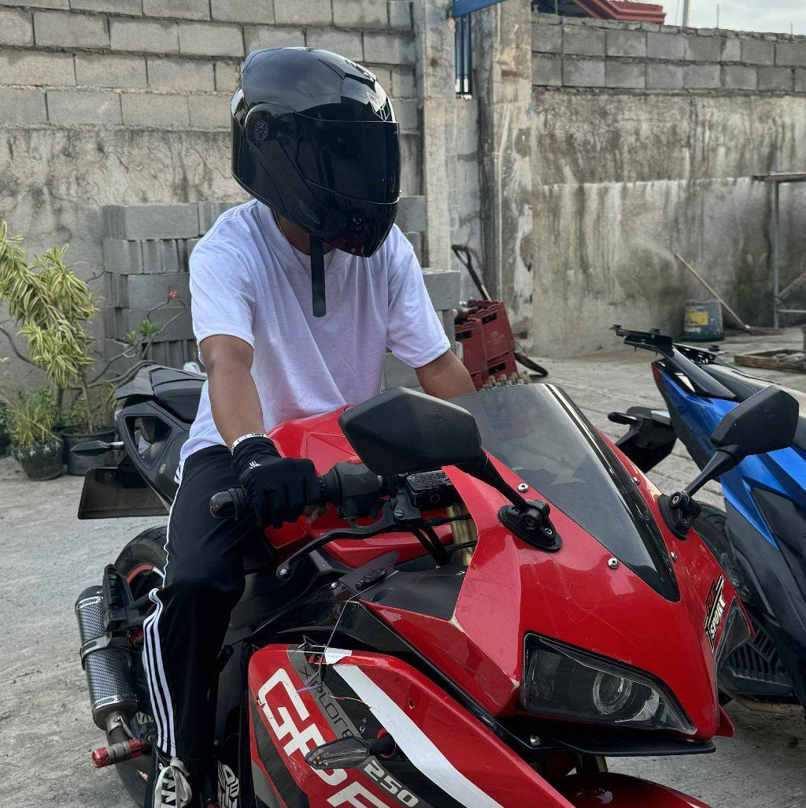
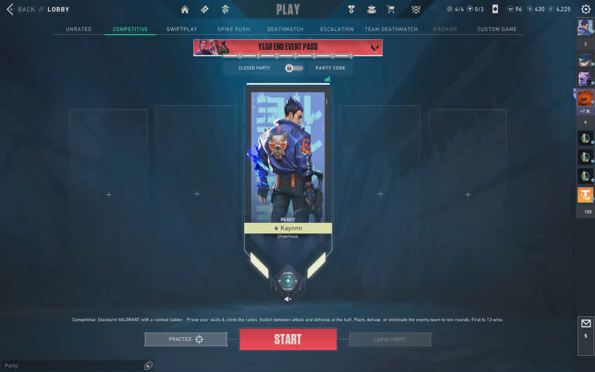

Hello
I am Crisher P. De Sola
a First Year BSIT Cybersecurity student at
Universidad De Dagupan

a First Year BSIT Cybersecurity student at
Universidad De Dagupan

I am Crisher P. De Sola, a first-year BSIT student taking up Cybersecurity. I have always been fascinated by technology, particularly how systems operate and how to keep them safe. This interest became my passion which led me to pursue this career. I have also encountered obstacles, but they have taught me valuable lessons, made me more resilient, and driven to achieve my dreams. Now, I am constantly working to enhance my skills and knowledge in cybersecurity, and I hope to one day be able to secure systems and contribute to the tech industry.

Riding Motorcycle
Taekwondo

Video Games

Hypertext Markup Language (HTML) is the standard markup language for documents designed to be displayed in a web browser.

CSS (Cascading Style Sheets) is a stylesheet language used to describe the presentation and visual layout of a document written in a markup language like HTML.
Computer troubleshooting is the systematic process of identifying, diagnosing, and solving technical problems with hardware, software, or network connectivity.


I first learned how to program in Grade 11 when I started using HTML. I started experimenting with simple tags for text, images, links and layouts to build web pages. It took some time to get used to how things work, but gradually I gained more confidence in creating basic web pages. It taught me how to troubleshoot issues and how websites work. It also introduced me to the world of web development and inspired me to further my learning in programming in college.